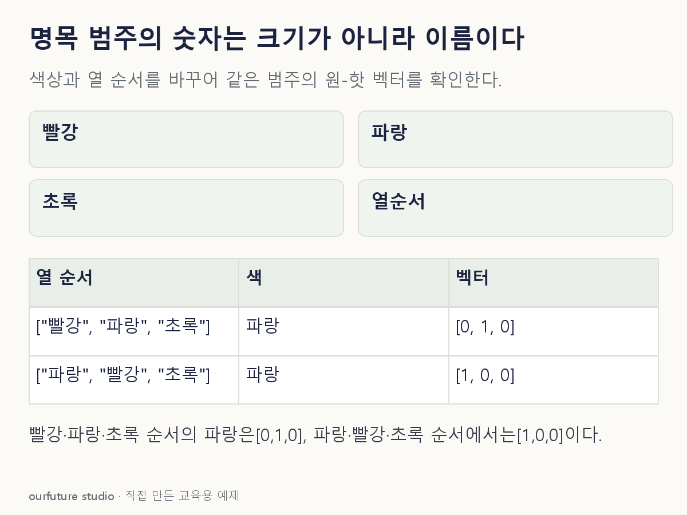

조건을 바꾸며 확인하기
범주 생략·절편·다중 선택·결측 인코딩은 제외한다. 벡터의 숫자가 색의 크기나 거리를 뜻하지 않는다.
기본 예제와 비교하기
아래 그림과 표는 글의 기본 조건입니다. 입력을 바꾼 결과는 계산 칸에서 확인하세요.

같은 문제를 직접 골라 보기
한 행은 색 하나다. 열 순서는 빨강·파랑·초록이며 범주를 생략하지 않는다.
조건을 더 바꾸면?
열 순서만 파랑·빨강·초록으로 바꾸면 같은 파랑의 벡터는?
변형 풀이 확인
[1,0,0]
의미는 같지만 파랑 열이 첫 번째로 이동했기 때문에 1의 위치가 바뀐다.
숫자의 위치보다 그 열의 범주 이름을 읽는다.